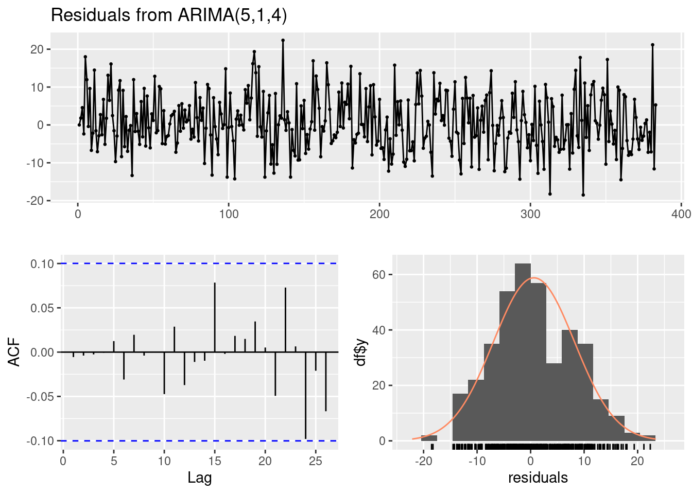
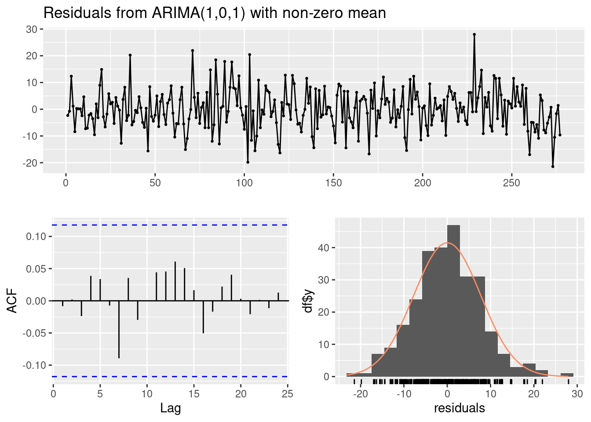

I want your feedback to make the book better for you and other readers. If you find typos, errors, or places where the text may be improved, please let me know. The best ways to provide feedback are by GitHub or hypothes.is annotations.
Opening an issue or submitting a pull request on GitHub: https://github.com/isaactpetersen/Fantasy-Football-Analytics-Textbook
Adding an annotation using hypothes.is.
To add an annotation, select some text and then click the
symbol on the pop-up menu.
To see the annotations of others, click the
symbol in the upper right-hand corner of the page.
21 Time Series Analysis
21.1 Getting Started
21.1.1 Load Packages
21.1.2 Load Data
21.2 Overview of Time Series Analysis
Time series analysis is useful when trying to generate forecasts from longitudinal data. There many different types of time series analyses. For simplicity, in this chapter, we use autoregressive integrated moving average (ARIMA) models to demonstrate one approach to time series analysis. ARIMA models perform best when there is a clear pattern where later values are influenced by earlier values (i.e., autoregressive effects and moving average effects). This may not strongly be the case in fantasy football, so ARIMA models may not be particularly useful in forecasting fantasy football performance. Nevertheless, ARIMA models are widely used in forecasting financial markets and economic indicators. Thus, it is a useful technique to learn.
Adapted from: https://rc2e.com/timeseriesanalysis (archived at https://perma.cc/U5P6-2VWC).
21.3 Create the Time Series Objects
Code
weeklyFantasyPoints_tomBrady <- player_stats_weekly_offense %>%
filter(
player_id == "00-0019596" | player_display_name == "Tom Brady")
weeklyFantasyPoints_peytonManning <- player_stats_weekly_offense %>%
filter(
player_id == "00-0010346" | player_display_name == "Peyton Manning")
ts_tomBrady <- xts::xts(
x = weeklyFantasyPoints_tomBrady["fantasy_points"],
order.by = weeklyFantasyPoints_tomBrady$gameday)
ts_peytonManning <- xts::xts(
x = weeklyFantasyPoints_peytonManning["fantasy_points"],
order.by = weeklyFantasyPoints_peytonManning$gameday)
ts_tomBrady fantasy_points
2000-11-23 0.24
2001-09-23 2.74
2001-09-30 6.92
2001-10-07 0.34
2001-10-14 22.56
2001-10-21 19.88
2001-10-28 8.02
2001-11-04 22.00
2001-11-11 4.18
2001-11-18 8.00
...
2022-11-06 15.20
2022-11-13 16.02
2022-11-27 18.04
2022-12-05 17.14
2022-12-11 10.12
2022-12-18 16.58
2022-12-25 11.34
2023-01-01 37.68
2023-01-08 7.36
2023-01-16 22.04 fantasy_points
1999-09-12 15.06
1999-09-19 16.40
1999-09-26 29.56
1999-10-10 19.66
1999-10-17 10.10
1999-10-24 17.86
1999-10-31 17.76
1999-11-07 17.76
1999-11-14 15.18
1999-11-21 22.00
...
2015-10-04 8.32
2015-10-11 6.64
2015-10-18 9.60
2015-11-01 11.60
2015-11-08 15.24
2015-11-15 -6.60
2016-01-03 2.56
2016-01-17 10.78
2016-01-24 14.14
2016-02-07 3.6421.4 Plot the Time Series
21.5 Rolling Mean/Median
fantasy_points
2001-09-30 6.560
2001-10-07 10.488
2001-10-14 11.544
2001-10-21 14.560
2001-10-28 15.328
2001-11-04 12.416
2001-11-11 13.984
2001-11-18 14.084
2001-11-25 10.568
2001-12-02 11.488
...
2022-10-23 15.492
2022-10-27 14.748
2022-11-06 15.612
2022-11-13 16.700
2022-11-27 15.304
2022-12-05 15.580
2022-12-11 14.644
2022-12-18 18.572
2022-12-25 16.616
2023-01-01 19.000 fantasy_points
2001-09-30 2.74
2001-10-07 6.92
2001-10-14 8.02
2001-10-21 19.88
2001-10-28 19.88
2001-11-04 8.02
2001-11-11 8.02
2001-11-18 8.52
2001-11-25 8.00
2001-12-02 8.52
...
2022-10-23 15.20
2022-10-27 15.20
2022-11-06 16.02
2022-11-13 17.10
2022-11-27 16.02
2022-12-05 16.58
2022-12-11 16.58
2022-12-18 16.58
2022-12-25 11.34
2023-01-01 16.5821.6 Autocorrelation
21.7 Fit an Autoregressive Integrated Moving Average Model
Series: ts_tomBrady
ARIMA(5,1,4)
Coefficients:
ar1 ar2 ar3 ar4 ar5 ma1 ma2 ma3
0.4519 -0.4600 -0.1781 -0.0834 0.2287 -1.3634 0.8837 -0.1480
s.e. 0.2444 0.2272 0.3634 0.0585 0.0535 0.2504 0.4110 0.5295
ma4
-0.3333
s.e. 0.3496
sigma^2 = 59.26: log likelihood = -1318.42
AIC=2656.83 AICc=2657.42 BIC=2696.29Series: ts_peytonManning
ARIMA(1,0,1) with non-zero mean
Coefficients:
ar1 ma1 mean
0.9134 -0.8192 17.4587
s.e. 0.0605 0.0786 0.9682
sigma^2 = 60.52: log likelihood = -959.87
AIC=1927.73 AICc=1927.88 BIC=1942.23
Call:
arima(x = ts_tomBrady, order = c(5, 1, 4))
Coefficients:
ar1 ar2 ar3 ar4 ar5 ma1 ma2 ma3
0.4519 -0.4600 -0.1781 -0.0834 0.2287 -1.3634 0.8837 -0.1480
s.e. 0.2444 0.2272 0.3634 0.0585 0.0535 0.2504 0.4110 0.5295
ma4
-0.3333
s.e. 0.3496
sigma^2 estimated as 57.86: log likelihood = -1318.42, aic = 2656.83
Training set error measures:
ME RMSE MAE MPE MAPE MASE
Training set 0.6138177 7.596882 6.059765 -26.43736 54.72413 0.7239184
ACF1
Training set -0.005875514 2.5 % 97.5 %
ar1 -0.02718585 0.93100467
ar2 -0.90534347 -0.01472881
ar3 -0.89026492 0.53413092
ar4 -0.19813198 0.03125533
ar5 0.12376560 0.33358684
ma1 -1.85414989 -0.87259362
ma2 0.07825054 1.68916699
ma3 -1.18577457 0.88978834
ma4 -1.01847540 0.35186954
Ljung-Box test
data: Residuals from ARIMA(5,1,4)
Q* = 2.2811, df = 3, p-value = 0.5162
Model df: 9. Total lags used: 12Code
Call:
arima(x = ts_tomBrady, order = c(5, 1, 4), fixed = c(NA, NA, 0, NA, NA, NA,
NA, NA, NA))
Coefficients:
ar1 ar2 ar3 ar4 ar5 ma1 ma2 ma3 ma4
0.5195 -0.5537 0 -0.0923 0.2248 -1.4320 1.0411 -0.4109 -0.1649
s.e. 0.2244 0.2095 0 0.0579 0.0559 0.2311 0.3713 0.2145 0.0657
sigma^2 estimated as 57.92: log likelihood = -1318.59, aic = 2655.18
Training set error measures:
ME RMSE MAE MPE MAPE MASE
Training set 0.6222971 7.600691 6.078548 -26.34234 54.91081 0.7261622
ACF1
Training set -0.005570349 2.5 % 97.5 %
ar1 0.07978268 0.959242224
ar2 -0.96433523 -0.143157528
ar3 NA NA
ar4 -0.20569255 0.021080469
ar5 0.11530044 0.334344203
ma1 -1.88493886 -0.979076737
ma2 0.31341100 1.768874322
ma3 -0.83134627 0.009456031
ma4 -0.29362802 -0.036192104
Ljung-Box test
data: Residuals from ARIMA(5,1,4)
Q* = 2.3773, df = 3, p-value = 0.4979
Model df: 9. Total lags used: 12Code
Call:
arima(x = ts_peytonManning, order = c(1, 0, 1))
Coefficients:
ar1 ma1 intercept
0.9134 -0.8192 17.4587
s.e. 0.0605 0.0786 0.9682
sigma^2 estimated as 59.86: log likelihood = -959.87, aic = 1927.73
Training set error measures:
ME RMSE MAE MPE MAPE MASE
Training set 0.005206747 7.736947 6.030506 -99.38311 124.2982 0.7309896
ACF1
Training set -0.008272646 2.5 % 97.5 %
ar1 0.7949304 1.0319427
ma1 -0.9732963 -0.6650994
intercept 15.5611483 19.3563260
Ljung-Box test
data: Residuals from ARIMA(1,0,1) with non-zero mean
Q* = 3.8411, df = 8, p-value = 0.8712
Model df: 2. Total lags used: 1021.8 Generate the Model Forecasts
Code
Point Forecast Lo 80 Hi 80 Lo 95 Hi 95
384 21.03918 11.290652 30.78772 6.1300916 35.94828
385 15.83752 6.050851 25.62418 0.8701029 30.80493
386 22.89837 13.062972 32.73377 7.8564254 37.94032
387 18.55187 8.527204 28.57654 3.2204660 33.88327
388 17.70611 7.680168 27.73206 2.3727526 33.03948
389 18.27131 8.148171 28.39445 2.7893058 33.75331
390 17.91113 7.751759 28.07050 2.3737135 33.44854
391 19.61626 9.454630 29.77790 4.0753848 35.15715
392 19.52851 9.362719 29.69431 3.9812732 35.07575
393 18.52801 8.361647 28.69436 2.9799013 34.07611 Point Forecast Lo 80 Hi 80 Lo 95 Hi 95
278 12.71938 2.804079 22.63467 -2.4447620 27.88351
279 13.12963 3.170404 23.08886 -2.1016934 28.36096
280 13.50437 3.508639 23.50011 -1.7827835 28.79153
281 13.84668 3.820584 23.87277 -1.4869093 29.18027
282 14.15935 4.107997 24.21070 -1.2128686 29.53157
283 14.44496 4.372576 24.51734 -0.9594210 29.84933
284 14.70584 4.615948 24.79573 -0.7253186 30.13700
285 14.94414 4.839661 25.04862 -0.5093279 30.39761
286 15.16181 5.045178 25.27845 -0.3102454 30.63387
287 15.36064 5.233877 25.48741 -0.1269092 30.8481921.9 Plot the Model Forecasts
21.10 Conclusion
21.11 Session Info
R version 4.4.1 (2024-06-14)
Platform: x86_64-pc-linux-gnu
Running under: Ubuntu 22.04.4 LTS
Matrix products: default
BLAS: /usr/lib/x86_64-linux-gnu/openblas-pthread/libblas.so.3
LAPACK: /usr/lib/x86_64-linux-gnu/openblas-pthread/libopenblasp-r0.3.20.so; LAPACK version 3.10.0
locale:
[1] LC_CTYPE=C.UTF-8 LC_NUMERIC=C LC_TIME=C.UTF-8
[4] LC_COLLATE=C.UTF-8 LC_MONETARY=C.UTF-8 LC_MESSAGES=C.UTF-8
[7] LC_PAPER=C.UTF-8 LC_NAME=C LC_ADDRESS=C
[10] LC_TELEPHONE=C LC_MEASUREMENT=C.UTF-8 LC_IDENTIFICATION=C
time zone: UTC
tzcode source: system (glibc)
attached base packages:
[1] stats graphics grDevices utils datasets methods base
other attached packages:
[1] lubridate_1.9.3 forcats_1.0.0 stringr_1.5.1 dplyr_1.1.4
[5] purrr_1.0.2 readr_2.1.5 tidyr_1.3.1 tibble_3.2.1
[9] ggplot2_3.5.1 tidyverse_2.0.0 forecast_8.23.0 xts_0.14.0
[13] zoo_1.8-12
loaded via a namespace (and not attached):
[1] utf8_1.2.4 generics_0.1.3 stringi_1.8.4 lattice_0.22-6
[5] hms_1.1.3 digest_0.6.36 magrittr_2.0.3 timechange_0.3.0
[9] evaluate_0.24.0 grid_4.4.1 fastmap_1.2.0 jsonlite_1.8.8
[13] nnet_7.3-19 fansi_1.0.6 scales_1.3.0 cli_3.6.3
[17] rlang_1.1.4 munsell_0.5.1 withr_3.0.1 yaml_2.3.10
[21] tools_4.4.1 parallel_4.4.1 tzdb_0.4.0 colorspace_2.1-1
[25] curl_5.2.1 vctrs_0.6.5 R6_2.5.1 lifecycle_1.0.4
[29] tseries_0.10-56 htmlwidgets_1.6.4 pkgconfig_2.0.3 urca_1.3-4
[33] pillar_1.9.0 gtable_0.3.5 glue_1.7.0 quantmod_0.4.26
[37] Rcpp_1.0.13 xfun_0.46 lmtest_0.9-40 tidyselect_1.2.1
[41] knitr_1.48 farver_2.1.2 htmltools_0.5.8.1 nlme_3.1-164
[45] labeling_0.4.3 rmarkdown_2.27 timeDate_4032.109 fracdiff_1.5-3
[49] compiler_4.4.1 quadprog_1.5-8 TTR_0.24.4